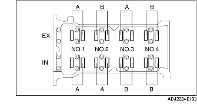

Valve clearance inspection
1. Turn the crankshaft clockwise so that the No.1 piston is at TDC of the compression stroke.
2. Measure the valve clearance at A shown in the figure.

- • If not within the specification, replace the tappet and adjust the valve to the median value. (See VALVE CLEARANCE ADJUSTMENT.)
3. Rotate the crankshaft clockwise 360° so that the No.4 piston is at TDC of the compression stroke.
4. Measure the valve clearance at B shown in the figure.

- • If not within the specification, replace the tappet and adjust the valve to the median value. (See VALVE CLEARANCE ADJUSTMENT)